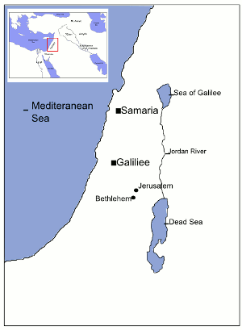

<div id="nt-map">
	
<style>#nt-map {width:30%;}</style>

	
<MAP NAME="map0">
	<AREA shape="rect" coords="34, 39, 192, 271" title="Mediteranean Sea" alt="Mediteranean Sea" >
	<AREA shape="rect" coords="308,166,447,211" title="Sea of Galilee" alt="Sea of Galilee" >
	<AREA shape="rect" coords="225,210,314,287" title="Samaria" alt="Samaria" >
	<AREA shape="rect" coords="314,237,326,361" title="Jordan River" alt="Jordan River" >
	<AREA shape="rect" coords="260,362,349,378" title="Jerusalem" alt="Jerusalem" >
	<AREA shape="rect" coords="185,385,273,404" title="Bethlehem" alt="Bethlehem">
	<AREA shape="rect" coords="301,399,342,542" title="Dead Sea" alt="Dead Sea" >
</MAP>
 </div>